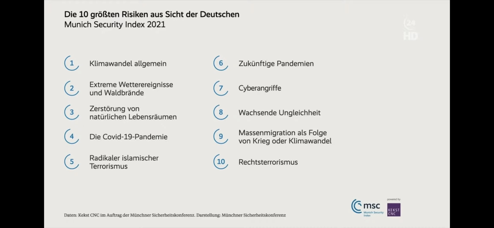

1. Einleitung: Eine stille Verschiebung
Im Jahr 2021 fragte der Munich Security Index die Deutschen nach den größten Risiken für ihre Sicherheit. Die Antworten waren eindeutig: Klimawandel, extreme Wetterereignisse, Zerstörung natürlicher Lebensräume, Pandemien, wachsende Ungleichheit, Migration infolge von Krieg und Klima, Cyberangriffe, Rechtsterrorismus.

Fünf Jahre später ist keines dieser Probleme gelöst. Im Gegenteil: Viele haben sich verschärft.
Und doch hat sich der sicherheitspolitische Diskurs spürbar verändert. 2026 dominieren Begriffe wie Abschreckung, Aufrüstung, Verteidigungsfähigkeit, militärische Stärke. Sicherheit wird enger definiert - territorial, strategisch, militärisch.
Das ist keine bloße Schwerpunktverschiebung. Es ist eine Veränderung des Sicherheitsbegriffs selbst.
Denn wenn eine Gesellschaft Risiken wie Klimawandel, Ungleichheit und digitale Destabilisierung als größte Bedrohungen wahrnimmt - diese aber in der politischen Debatte kaum noch systemisch adressiert werden -, entsteht eine Lücke. Eine Lücke zwischen Risikoanalyse und politischer Priorität.
Und genau diese Lücke entscheidet darüber, ob wir Stabilität aufbauen - oder nur auf Krisen reagieren.
2. Der Kern: Zwei Sicherheitslogiken
Hinter der Verschiebung des Diskurses stehen zwei unterschiedliche Logiken von Sicherheit.
Die erste Logik ist präventiv und strukturell. Sie versteht Sicherheit als Stabilität von Systemen. Klimawandel, Biodiversitätsverlust, Pandemierisiken, wachsende Ungleichheit oder digitale Verwundbarkeit sind in dieser Perspektive keine Randthemen, sondern Ursachenrisiken. Sie destabilisieren Gesellschaften langfristig, erzeugen Migrationsbewegungen, politische Polarisierung, wirtschaftliche Verwerfungen und letztlich Konflikte.
Diese Logik fragt: Wie verhindern wir, dass Instabilität überhaupt entsteht?
Die zweite Logik ist reaktiv und operativ. Sie versteht Sicherheit primär als Verteidigungsfähigkeit gegenüber konkreten Bedrohungen. Militärische Abschreckung, Bündnisfähigkeit, strategische Resilienz und Rüstungsfähigkeit stehen im Mittelpunkt. Hier geht es darum, auf bestehende Gefahrenlagen zu reagieren und Handlungsfähigkeit im Ernstfall sicherzustellen.
Diese Logik fragt: Wie verteidigen wir uns, wenn Instabilität bereits eskaliert ist?
Beide Perspektiven sind legitim. Ein Staat muss verteidigungsfähig sein. Doch problematisch wird es, wenn die reaktive Logik die strukturelle vollständig überlagert. Dann verschiebt sich der Fokus von Ursachenprävention zu Krisenmanagement. Von Systemstabilisierung zu Eskalationskontrolle.
Sicherheit wird dann nicht mehr als langfristige Resilienz verstanden, sondern als Fähigkeit zur Gegenwehr.
Die zentrale Frage lautet daher nicht, ob militärische Sicherheit notwendig ist. Die zentrale Frage lautet, ob wir die strukturellen Risiken noch als sicherheitspolitische Kernaufgabe behandeln - oder sie implizit in andere Politikfelder auslagern.
Denn genau an dieser Stelle entscheidet sich, ob Sicherheit als Systembegriff gedacht wird - oder als Instrument.
3. Die systemische Wirkungskette
Sicherheit entsteht oder zerfällt nicht isoliert. Sie ist das Ergebnis miteinander verbundener Wirkungszusammenhänge.
Klimawandel führt nicht nur zu steigenden Temperaturen. Er führt zu Wasserknappheit, Ernteausfällen, wirtschaftlichen Einbrüchen, Binnenmigration und geopolitischen Spannungen. Ressourcenknappheit erhöht das Konfliktpotenzial - innerhalb von Staaten und zwischen ihnen.
Wachsende Ungleichheit bleibt nicht sozial folgenlos. Sie untergräbt Vertrauen in Institutionen, verstärkt Polarisierung und erhöht die Anfälligkeit für populistische oder autoritäre Narrative. Politische Radikalisierung entsteht selten aus Stabilität - sie entsteht aus gefühlter Ohnmacht und realer ökonomischer Unsicherheit.
Digitale Verwundbarkeit ist nicht nur ein IT-Problem. Cyberangriffe und Desinformation greifen kritische Infrastrukturen, demokratische Prozesse und gesellschaftliche Kohäsion an. Sie destabilisieren Systeme, bevor physische Konflikte sichtbar werden.
Diese Ketten sind keine theoretischen Konstrukte. Sie sind empirisch beobachtbar.
Klimarisiken → wirtschaftliche Instabilität → Migration → gesellschaftliche Spannungen Ungleichheit → Vertrauensverlust → Polarisierung → demokratische Erosion Desinformation → Destabilisierung → institutionelle Schwächung
Militärische Sicherheit greift meist am Ende dieser Ketten ein - wenn Eskalation bereits sichtbar geworden ist.
Strukturelle Sicherheit hingegen setzt früher an. Sie versucht, die Dynamik zu unterbrechen, bevor sie in offene Konflikte mündet.
Wer Sicherheit systemisch denkt, betrachtet daher nicht nur Bedrohungsakteure, sondern Bedrohungsursachen. Nicht nur Eskalationsfähigkeit, sondern Resilienzfähigkeit.
Und genau hier entscheidet sich, ob Politik langfristig stabilisiert - oder lediglich reagiert.
4. Die eigentliche Frage
Warum verschiebt sich der Sicherheitsdiskurs - obwohl die strukturellen Risiken weiterbestehen oder sich sogar verschärfen?
Warum dominiert die Sprache von Stärke, Abschreckung und militärischer Handlungsfähigkeit, während Klimarisiken, Biodiversitätsverlust, Ungleichheit oder digitale Destabilisierung seltener als sicherheitspolitische Kernfragen verhandelt werden?
Ein möglicher Grund liegt in der Sichtbarkeit von Bedrohungen. Militärische Gefahren sind konkret, personifizierbar und medial vermittelbar. Panzer, Raketen, Truppenbewegungen - sie lassen sich zählen, kartieren und strategisch einordnen.
Strukturelle Risiken hingegen sind diffus, langfristig und komplex. Klimawandel ist kein Akteur. Ungleichheit marschiert nicht über Grenzen. Demokratische Erosion geschieht schleichend. Ihre Dynamik entfaltet sich über Jahre - nicht über Tage.
Politische Systeme reagieren jedoch besonders stark auf akute Ereignisse. Eskalationen erzeugen unmittelbaren Handlungsdruck. Prävention erzeugt selten Schlagzeilen.
Hinzu kommt eine zweite Dynamik: Militärische Sicherheit ist ein Feld klarer Zuständigkeiten und etablierter Institutionen. Strukturelle Sicherheit hingegen ist interdisziplinär. Sie berührt Umweltpolitik, Sozialpolitik, Wirtschaftspolitik, Bildung, Digitalisierung. Sie verlangt Koordination, Langfristigkeit und systemisches Denken.
Doch genau diese Komplexität darf nicht zur Auslagerung führen.
Denn wenn Sicherheit politisch enger definiert wird, verschiebt sich nicht nur die Debatte - es verschieben sich auch Prioritäten, Ressourcen und strategische Aufmerksamkeit.
Die eigentliche Frage lautet daher: Erweitern wir den Sicherheitsbegriff angesichts komplexer Risiken - oder verengen wir ihn aus operativer Notwendigkeit?
Die Antwort darauf entscheidet nicht nur über Verteidigungsfähigkeit, sondern über die langfristige Stabilität unserer Gesellschaften.
5. Der Schluss: Eine neue Definition von Sicherheit
Sicherheit ist mehr als territoriale Unversehrtheit. Sie ist die Fähigkeit eines Gemeinwesens, langfristig stabil zu bleiben - ökologisch, sozial, wirtschaftlich und institutionell.
Militärische Verteidigungsfähigkeit ist ein notwendiger Bestandteil dieser Stabilität. Aber sie ist nicht ihr Fundament.
Das Fundament liegt in der Resilienz von Systemen: in stabilen Ökosystemen, in sozialer Kohäsion, in funktionierenden demokratischen Institutionen, in wirtschaftlicher Teilhabe, in digitaler Integrität.
Eine Gesellschaft, die ihre natürlichen Lebensgrundlagen verliert, kann militärisch noch so gut ausgerüstet sein - sie bleibt verwundbar. Eine Demokratie, die durch Ungleichheit und Desinformation erodiert, kann noch so starke Bündnisse haben - sie verliert innere Stabilität.
Eine zeitgemäße Sicherheitsstrategie muss deshalb zweigleisig sein: wehrhaft nach außen - stabilisierend nach innen.
Sicherheit entsteht dort, wo Ursachenrisiken reduziert werden, bevor sie eskalieren. Wo Klimapolitik nicht als Umweltpolitik, sondern als Friedenspolitik verstanden wird. Wo soziale Gerechtigkeit nicht nur als Verteilungsfrage, sondern als Demokratie- und Sicherheitsfrage behandelt wird.
Die Debatte darf sich nicht zwischen militärischer Stärke und struktureller Resilienz entscheiden. Sie muss beides integrieren.
Denn echte Sicherheit ist nicht die Abwesenheit eines Angriffs. Echte Sicherheit ist die Stabilität von Mensch, Planet und Demokratie.
Und genau daran wird sich messen lassen, wie tragfähig unsere Sicherheitsstrategie wirklich ist.